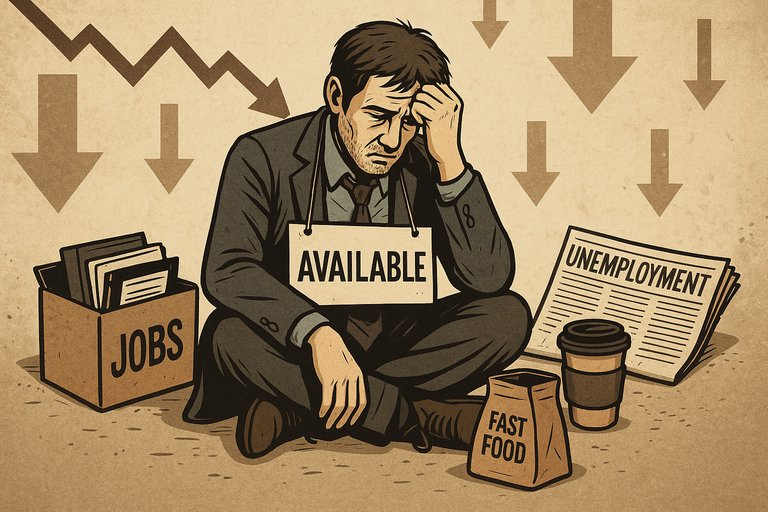

Publicado em 2025-06-24 11:43:15
"Usually the person having these exact 25 skills DOESN’T EVEN EXIST ON THE PLANET."
Na nova ordem laboral global, onde algoritmos filtram candidatos como se fossem pacotes de arroz e a ilusão da eficiência tudo justifica, um grito lúcido e cortante ecoa entre os que já viveram os dois lados da moeda: a valorização do saber e o desprezo pela experiência.
Durante anos, engenheiros de software — como tantos outros profissionais qualificados — eram disputados por empresas que viam neles potencial, criatividade, vontade de aprender. Bastava cumprir 70% dos requisitos e havia lugar para crescer. As empresas entendiam que formar era investir. Mas esses tempos evaporaram-se.
Hoje, as empresas exigem 25 competências altamente específicas, extraídas de um universo de milhares. Não para treinar, não para cultivar talento — mas para descartar à mínima falha. E o mais irónico? O profissional com as 25 skills… nem sequer existe.
A hiperespecialização tornou-se uma desculpa para a precariedade. Os RH alinham palavras-chave em listas de verificação e descartam, em segundos, candidatos com décadas de experiência. A inteligência humana foi substituída pela lógica do filtro automático.
E mesmo os que conseguem entrar, vivem sob a espada das “reestruturações”. A rentabilidade deixou de ser critério de segurança. Lucro já não significa estabilidade — significa que alguém, num andar acima, quer ainda mais lucro.
O resultado? Milhares de profissionais são forçados a empregos em restauração, entregas, armazéns. São invisibilizados nas estatísticas: estão empregados — logo, não são problema. O sistema respira aliviado, enquanto o engenheiro serve hambúrgueres.
Esta não é apenas a história do mercado de trabalho. É a história de uma civilização que substituiu o talento pela submissão, a experiência pelo alinhamento cego e o mérito por métricas ocidentais irrelevantes.
Não há desemprego, dizem eles.
Claro que não. Há subemprego, humilhação crónica e fuga de cérebros.
Mas os números estão bonitos.
E é só isso que interessa a quem já deixou de ver o ser humano do outro lado da folha de cálculo.
Está na hora de dar voz aos que foram calados. Está na hora de escrever sobre os que não contam. Está na hora de rasgar a fantasia do “progresso” e olhar de frente o abismo social que nos espera — se não mudarmos o rumo.
Porque o problema não é sermos negativistas.
É termos os olhos abertos.
E isso, meus caros, ainda não conseguiram automatizar.
Artigo de Francisco Gonçalves in Fragmentos de Caos